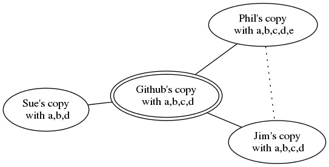
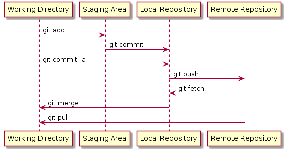
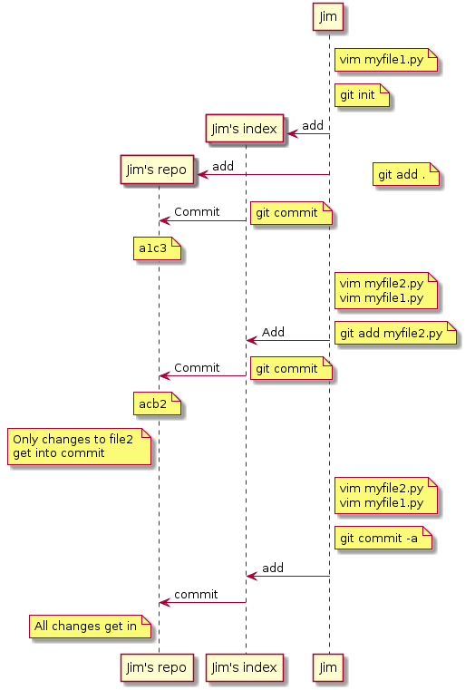
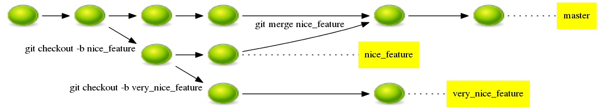

Close
Close

Practical Version Control and Issue Tracking
What Version Control is For
- Managing Code Inventory
- "When did I introduce this bug"?
- Undoing Mistakes
- Working with other programmers
- "How can I merge my work with Jim's"
What is version control?
Do some programming
my_vcs commit
Program some more
Realise mistake
my_vcs rollback
Mistake is undone
What is version control?
| Sue | James |
|---|---|
my_vcs commit |
... |
| ... | my_vcs checkout |
| ... | do some programming |
| ... | my_vcs commit |
my_vcs update |
more programming |
| Do some programming | ... |
| ... | my_vcs commit |
my_vcs commit |
... |
| Oh Noes! Error! | ... |
Resolving conflicts
my_vcs commit |...
Oh Noes! Error! |...
my_vcs update |...
my_vcs merge |...
my_vcs commit |...
... |my_vcs commit
... |Error again...
Centralised Version Control
Centralised VCS concepts
- There is one, linear history of changes on the server or repository
- Each revision has a unique, sequential identifier (1,2,3,4...)
- You have a working copy
- You update the working copy to match the state of the repository
- If someone else has changed the repository while you were working:
- You update to get their changes
- You have to resolve conflicts
- Then you commit
Centralised VCS diagram

Centralised VCS solo workflow

Centralised VCS team workflow

Centralised VCS conflicted workflow

Resolving conflicts
On update, you get a prompt like:
svn update
> Conflict discovered in ’sharedfile.py'.
> Select: (p) postpone, (e) edit, (mc) mine-conflict ...
If you choose (e) the conflicted file will look something like:
Whatever was in the file before the conflicted bit
<<<<<<< .mine
Sue’s content
=======
Jim’s content
>>>>>>> .r4
Content after the conflicted bit
It is your duty to edit this to fix conflicts, then save.
Revisiting history
Update to a particular revision:
Bash
svn up -r 3
See the differences between your working area and a revision
Bash
svn diff #To most recent version
svn diff -r 3
See what you've changed:
svn status
Get rid of changes to a file:
svn revert myfile.py
Distributed Version Control
Distributed versus centralised
| Centralised | Distributed |
|---|---|
| Server has history | Every user has full history |
| Your computer has one snapshot | Many local branches |
| To access history, need internet | History always available |
| You commit to remote server | Users synchronise histories |
| cvs, subversion(svn) | git, mercurial (hg), bazaar (bzr) |
Distributed VCS in principle

Distributed VCS in practice

Pragmatic Distributed VCS
| Subversion | Git |
|---|---|
svn checkout <URL> |
git clone <URL> |
svn commit |
git commit -a; git push |
svn up |
git pull |
svn status |
git status |
svn diff |
git diff |
Why Go Distributed?
- Easy to start a repository (no server needed)
- Easy to start a server
- Can work without internets
- Better merges
- Easy branching
- More widespread support
Why Not Go Distributed?
- More complex commands
- More confusing
Distributed VCS concepts
- Each revision has a parent that it is based on
- These revisions form a graph
- The most recent revision in each copy is the HEAD
- Each revision has a unique hash code
- In Sue's copy, revision 43 is ab3578d6
- Jim thinks that is revision 38
- When you pull from a remote the histories might conflict
- Histories are merged together
A revision graph

Distributed VCS concepts (2)
- You have a working copy
- You pick a subset of the changes in your working copy to add to the next commit
- Changes to be included in the next commit are kept in a staging area (a.k.a. index)
- When you commit you commit:
- From the staging area
- To the local repository
- You push to remote repositories to share or publish
- You pull (or fetch) to bring in changes from a remote
The Levels of Git

Using Git
Distributed VCS Solo Workflow

Distributed VCS With Publishing

Distributed VCS in teams without conflicts

Distributed VCS in teams with conflicts

Working with multiple remotes
git remote add sue ssh://sue.ucl.ac.uk/somerepo
# Add a second remote
git remote
# List available remotes
git push sue
# Push to a specific remote
# Default is origin
Branches
Working with branches

Working with branches in git
git branch # Tell me what branches exist
* master # Asterisk tells me which one
experiment # I am currently on
git checkout -b somebranch # Make a new branch
git checkout master # Switch to an existing branch
Sharing branches
git push -u origin experiment # Share a recently
# made branch
git push origin experiment #Republish a branch
git branch -r #Discover remote branches
git checkout origin/some_branch #Get a branch
#from a remote
Merging branches
git checkout master # Switch to master branch
git merge experiment # Merge the branch in
git branch -d experiment # Delete branch locally
git push --delete experiment # Delete published branch
A good branch strategy
- A
productionbranch: code used for active work - A
developbranch: for general new code featurebranches: for specific new ideasreleasebranches: when you share code with others- Useful for isolated bug fixes
Tagging
Easy to read labels for revisions Produce real results only with tagged revisions
git tag -a v1.3
git push --tags
Branching and tagging in subversion
- Subversion doesn't have real branches and tags
- Instead, each is a separate whole copy
- But you can still merge between copies
Hosting Servers
Hosting a server
- Any repository can be a remote for pulls
- Can pull/push over shared folders or ssh
- Pushing to someone's working copy is dangerous
- Use
git init --bareto make a copy for pushing - You don't need to create a "server"
Hosting a server in the cloud
- Many online services
- Github, bitbucket, sourceforge...
- I recommend GitHub